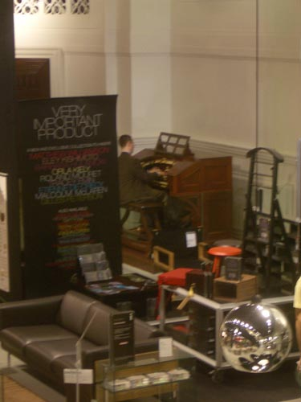

| < | > |
| habitat | [2006-06-14 23:24] |
| it's hard to get a busy man to relax - one way is to get him out for a walk - do a bit of pre-shopping
we definitely need something better to put our CDs in - so in we popped at the new habitat store on Regent's Street i'm generally not one for furniture shops - try not to torture myself with the life i can't have - but we did stumble across an unusual feature - it made for a pleasant experience the store is in an old cinema building - over in the corner is the old cinema organ - as we were inspecting the CD storage racks it suddenly sprang into life swirling and umpahpahing on for a good half an hour - driven by a plain young man in a suit  |
|
|
|